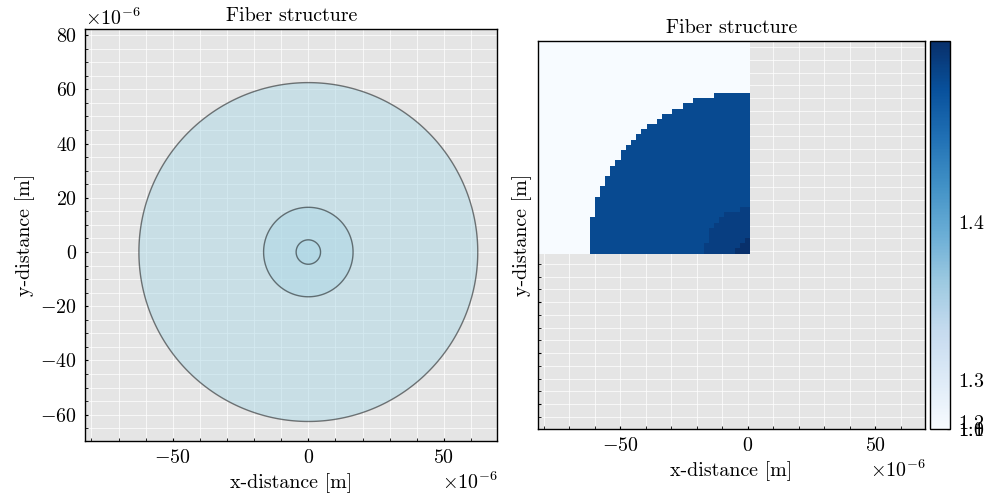
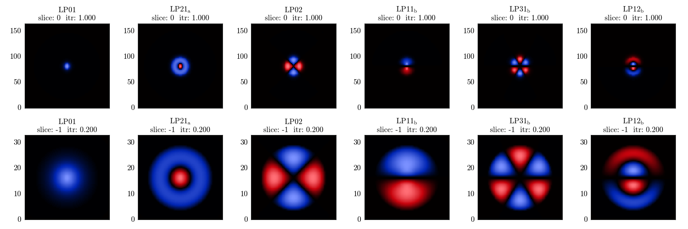
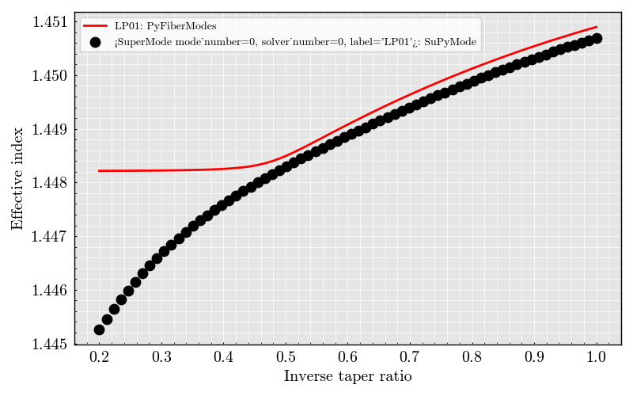

Note
Go to the end to download the full example code.
Propagation constant: DCFC#
Imports#
import numpy
from SuPyMode.workflow import (
Workflow,
fiber_loader,
Boundaries,
BoundaryValue,
DomainAlignment,
)
from PyOptik import MaterialBank
from PyFiberModes import LP01
from PyFiberModes.fiber import load_fiber
import matplotlib.pyplot as plt
wavelength = 1550e-9
fiber_name = "DCF1300S_33"
Generating the fiber structure#
Here we define the cladding and fiber structure to model the problem
fiber_list = [
fiber_loader.load_fiber(
fiber_name,
clad_refractive_index=MaterialBank.fused_silica.compute_refractive_index(
wavelength
),
) # Refractive index of silica at the specified wavelength
]
Defining the boundaries of the system
boundaries = [
Boundaries(right=BoundaryValue.SYMMETRIC, bottom=BoundaryValue.SYMMETRIC),
Boundaries(right=BoundaryValue.SYMMETRIC, bottom=BoundaryValue.ANTI_SYMMETRIC),
]
Generating the computing workflow#
Workflow class to define all the computation parameters before initializing the solver
workflow = Workflow(
fiber_list=fiber_list, # List of fiber to be added in the mesh, the order matters.
wavelength=wavelength, # Wavelength used for the mode computation.
resolution=80, # Number of point in the x and y axis [is divided by half if symmetric or anti-symmetric boundaries].
x_bounds=DomainAlignment.LEFT, # Mesh x-boundary structure.
y_bounds=DomainAlignment.TOP, # Mesh y-boundary structure.
air_padding_factor=1.3,
boundaries=boundaries, # Set of symmetries to be evaluated, each symmetry add a round of simulation
n_sorted_mode=3, # Total computed and sorted mode.
n_added_mode=4, # Additional computed mode that are not considered later except for field comparison [the higher the better but the slower].
debug_mode=0, # Print the iteration step for the solver plus some other important steps.
auto_label=True, # Auto labeling the mode. Label are not always correct and should be verified afterwards.
itr_final=0.2, # Final value of inverse taper ratio to simulate
n_step=70,
)
workflow.initialize_geometry() # Initialize the geometry and plot it
workflow.run_solver() # Run the solver to compute the modes
Plotting the geometry
workflow.geometry.plot()

<Figure size 1000x500 with 3 Axes>
Plotting the field distribution
workflow.plot("field")
itr_list = workflow.superset.model_parameters.itr_list

Computing the analytical values using FiberModes solver.
dcf_fiber = load_fiber(fiber_name=fiber_name, wavelength=wavelength, add_air_layer=True)
Preparing the figure
figure, ax = plt.subplots(1, 1)
ax.set(
xlabel="Inverse taper ratio",
ylabel="Effective index",
)
pyfibermodes_mode = LP01
supymode_mode = workflow.superset.LP01
analytical = numpy.empty(itr_list.shape)
for idx, itr in enumerate(itr_list):
_fiber = dcf_fiber.scale(factor=itr)
analytical[idx] = _fiber.get_effective_index(mode=pyfibermodes_mode)
ax.plot(
itr_list,
analytical,
label=str(pyfibermodes_mode) + ": PyFiberModes",
linestyle="-",
linewidth=2,
color="red",
)
ax.scatter(
itr_list,
supymode_mode.index.data,
label=str(supymode_mode) + ": SuPyMode",
color="black",
s=80,
linestyle="-",
)
ax.legend()
plt.show()
# -

Total running time of the script: (0 minutes 33.816 seconds)